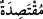
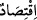

olmadığına da dikkat çekilmektedir.
Mesnevî’de şöyle denilmiştir:
Kendine gel de, eğer sana gönül gerekse, dikkat et
Çünkü her işin ardından senin için bir şey meydana gelir
Nükteleri, remizleri anlamadığın için
Bu belâ sana aptallığından gelir
Sanki “Acaba onların hepsi îman etmiyor, günahlardan sakınmıyor ve kitapları
gereğince uygulamıyorlar mı?” diye sorulmuş ve cevap olarak şöyle buyurulmuştur:
“İçlerinde” Abdullah b. Selam ve onun gibi îman eden yahûdîlerden ve îman eden
hristiyanlardan kırk sekiz kişi gibi “ılımlı bir zümre” aşırı gitmeyen, geri de kalmayan
âdil bir topluluk “vardır”.
“Ilımlı” olarak tercüme edilen âyetteki “__WORD__” kelimesinin masdarı olan “__WORD__”,
lügatte “ifrat ve tefrite sapmadan orta yolu tutmak” anlamındadır.
“Fakat çoğunun” hakkında söylenebilecek olan şey “yaptıkları ne kötü!” olduğudur.
Bu ibare, taaccüb ifade etmektedir. Yani inat, büyüklük taslama, tahrif ve ondan yüz
çevirme gibi ne de kötü işler yapıyorlar!
Yine âyet-i kerime takvânın, rızık genişliğine, dünyâ ve âhiret mutluluğuna sebep
olduğunu beyan etmektedir.
Abdullah el-Kalânsî başından geçen bir olayı şöyle anlatır: Bir sefer sırasında
şiddetli bir rüzgar çıktı, deniz azgınlaştı. Gemidekiler duâ ediyor, adaklar adıyorlardı.
Benden de adak adamamı istediler. Ben dünyâdan vazgeçmiş biri olduğumu söyledimse
de dinletemedim. Bunun üzerine “Eğer Allah beni bu musibetten kurtarırsa asla fil eti
yemeyeceğim.” diye adak adadım. Onlar: “Kim fil eti yiyor ki, sen onu kendine haram
kılıyorsun?” dediler. Ben: “Aklıma böyle geldi.” dedim.
Gemiden bir grup insanla kurtulduk. Bilmediğimiz bir sâhile çıkmıştık. Ne
yapacağımızı, nereye gideceğimizi bilemez bir haldeydik. Yiyeceğimiz de yoktu.
Açlıktan bîtap bir haldeyken bir de baktık ki bir fil yavrusu yakınımıza kadar gelmiş.
Arkadaşlarım hemen onu kesip hepsi etini yediler. Ben ise ahdimde durmak için etten
yemedim. Bu hâlin ıztırar (mecbûriyet) hâli olduğunu ve mutlakâ yemem gerektiğini
söylediler. Israr ettilerse de ben yine yemedim. Bilâhere arkadaşlarım uykuya daldılar.
Bu arada anne fil bizim bulunduğumuz yere geldi. Yavrusunun kemiklerini görünce
bizi teker teker koklayıp kimde yavrusunun kokusunu aldıysa onu ezip geçmeye başladı.
Beni de kokladı. Etten yemediğim için bana bir zarar vermedi. Hattâ koca fil âdetâ bana
sırtıma bin der gibi önümde eğildi. Ben sırtına binince de hızla yürümeye başladı. Gece
boyunca gittik. Sabaha yakın beni bir yerde indirdi. Seher vakti olduğum yerde dururken
bir grup insana rastladım. Beni evlerine götürdüler, ağırladılar. Bir tercüman